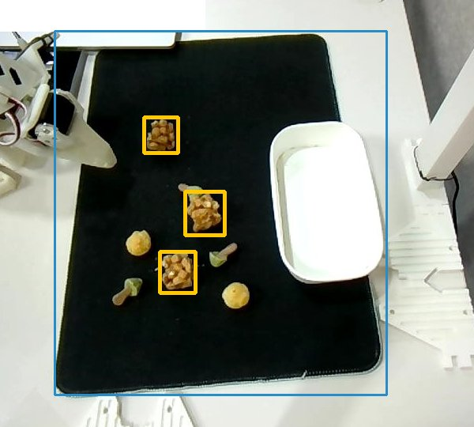
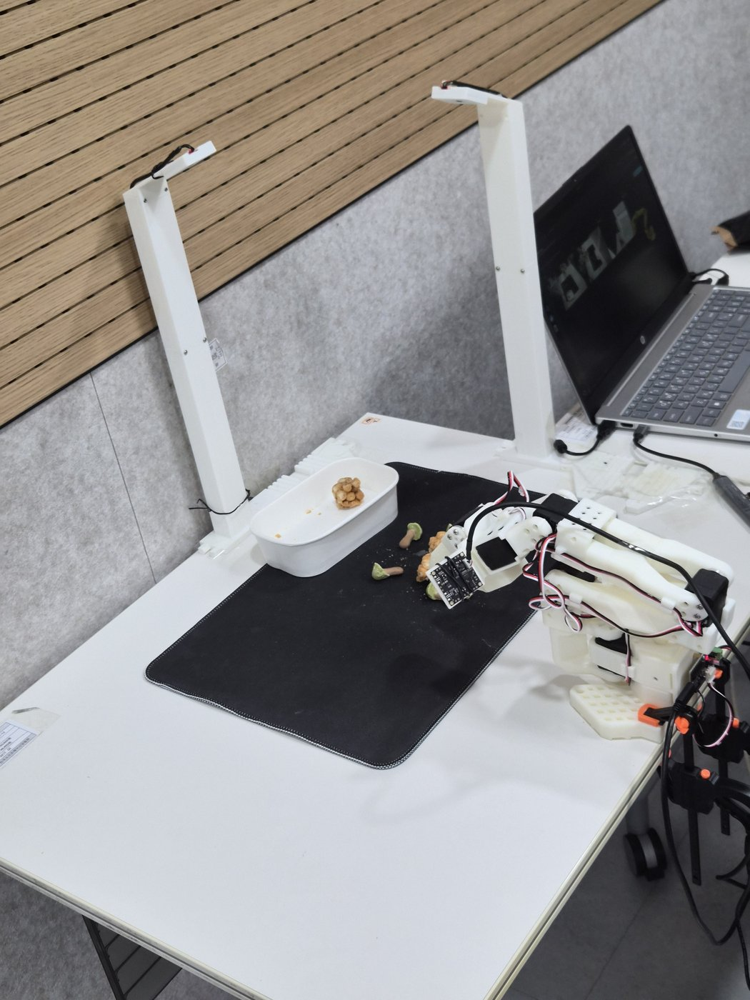
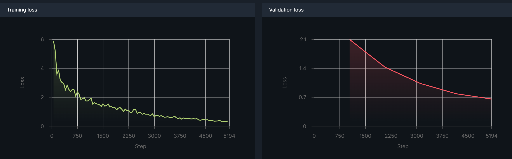
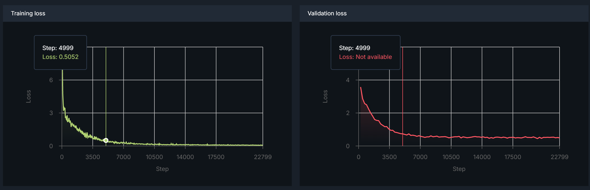

섞인 트레이에서 오란다만 골라 옮기고,
지치면 도리도리로 거부하고, 달래면 다시 일하는 로봇팔
채팅·🎤로 일을 시키면 카메라로 세고, 하나씩 옮기다 절반쯤에서 지쳐 거부한다
과자를 찾아 집는 건 ACT가 영상만 보고 한다. 나머지(언제 끝낼지, 성공했는지, 무슨 말을 할지)는 코드와 LLM
노트북 한 대(Windows)에서 팔·카메라 3대·모델·웹 UI가 모두 돈다
학습 없이 색·크기·위치 규칙만으로. 한 번 세는 데 약 17ms

LLM이 허용 밖 행동을 고르면 행동도 대사도 버리고 규칙으로 바꾼다
사람이 리더 팔로 보여 주면(텔레옵) 로봇이 따라 배운다 · physical-ai-studio에서 ACT 학습

| 오란다 집기 | 도리도리 | |
|---|---|---|
| 데이터 | 31개 · 9,111프레임 | 약 1천 프레임* |
| 학습 | 5 에포크 · 배치 8 | 100 에포크 · 배치 4 |
| train loss | 0.35 | 0.07 |
| val loss | 0.66 (계속 감소) | 0.49 (최저 0.45) |


physical-ai-studio에서 녹화·학습 → OpenVINO로 내보내 노트북 CPU에서 추론
음성 인식은 노트북 안에서(OpenVINO), 대사 생성·음성 합성은 API
| 상태 | 허용 의도 | 예 |
|---|---|---|
| 대기 | 작업 시작 · 잡담 · 도리도리 | "오란다 옮겨줘" |
| 거부 중 | 재개 · 잡담 | "조금만 더 힘내 줘" |
| 작업 중 | 잡담 | 대답만, 작업엔 영향 없음 |
노트북에 실제 팔·카메라를 연결해 확인한 숫자